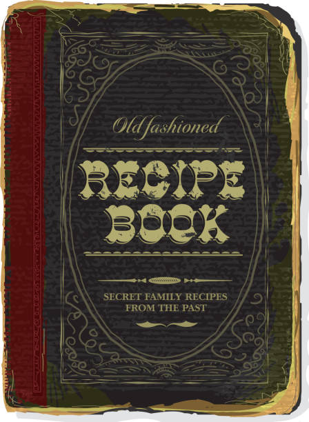

Weirdest Vintage Salads with Recipes

Recipes List
Following below are some of the weirdest salad recipes from days bygone that, we are glad, are "Vintage"
Perfection Salad
Frozen Cheese Salad
Christmas Candle Salad
Navigation
Top of Page